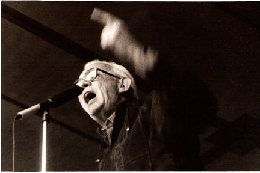

Heberto Castillo
1928-1997

Destacado luchador y dirigente social mexicano. Siempre junto al pueblo, Heberto Castillo apoyó las luchas ferrocarrileras, la de los maestros normalistas, la de los médicos y el movimiento estudiantil de 1968, participación por la que fue encarcelado en Lecumberri por el gobierno de Gustavo Díaz Ordaz.
Estudió ingeniería civil en la Escuela Nacional de Ingenieros de la Universidad Nacional Autónoma de México (UNAM). Además fue profesor de la UNAM y del Instituto Politécnico Nacional.